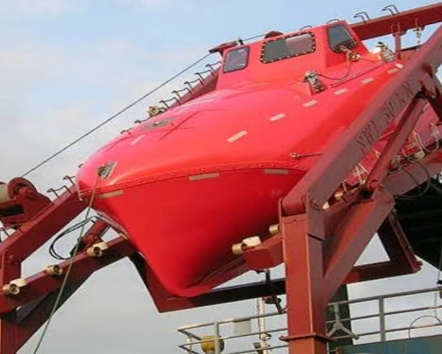

FFD (Free Fall Davits) - Serbest Düşmeli Bot Mataforaları
Teknik Servis & Can Güvenliği Sistemleri

Hayati Risk
FFD sistemleri, acil durumlarda mürettebatın ve yolcuların tahliyesinde hayati bir rol oynar. Hızlı tepki süresi, denizde hayatta kalma şansını artırır. Arızalı bir FFD, tahliye sürecini engelleyerek ciddi güvenlik riskleri oluşturur. SOLAS uyumluluğu ve düzenli testler, bu sistemlerin güvenilirliğini garanti altına alır.
Sistem Tanımı
Serbest düşmeli bot mataforaları, kurtarma veya can kurtarma botlarının hızlı bir şekilde denize indirilmesini sağlayan sistemlerdir. Serbest düşme mekanizması, botun saniyeler içinde suya ulaşmasını sağlar ve genellikle hidrolik veya mekanik tahrikle çalışır.
Servis Kapsamı
- Serbest bırakma (Release) mekanizması testi
- Hidrolik silindir ve ünite revizyonu
- SOLAS ve Class kurallarına uygun yıllık muayene
- Geri alma (Recovery) vinci ve motor bakımı
- Kilit sistemleri ve yapısal kondisyon kontrolü
- Acil durum manuel operasyon testleri